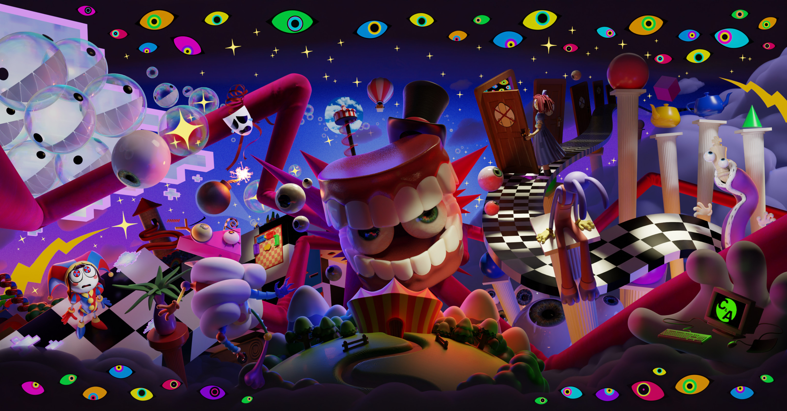
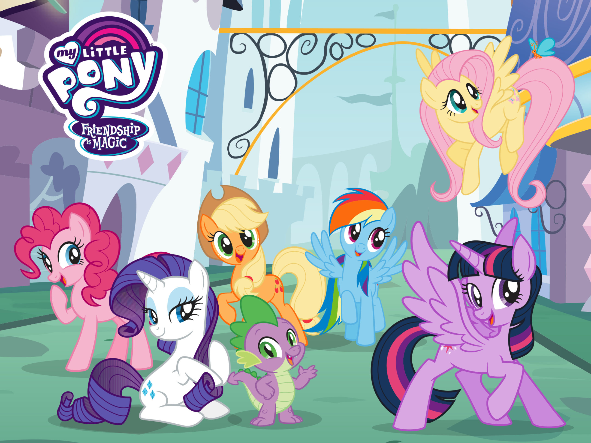

Shows

The Amazing Digital Circus
The Amazing Digital Circus is an Australian-American computer-animated comedy web series created by Gooseworx and produced by Glitch Productions. I really love TADC for its abstract plot of characters being trapped inside a digital world. The characters feel relatable in their desperation to escape, while also learning to accept their situation.

Hazbin Hotel
Hazbin Hotel is controversial due to its themes, but I personally love its concept and characters. The story follows the Princess of Hell trying to rehabilitate sinners to stop overpopulation. Even though the writing can be flawed, the characters are complex and meaningful to me.

My Little Pony: Friendship is Magic
The ponies represent different aspects of friendship and go on adventures to protect Equestria. This show was one of my childhood favorites because of its strong themes of friendship. It made me appreciate meaningful relationships and shaped how I view friendships today.